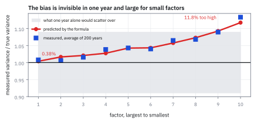
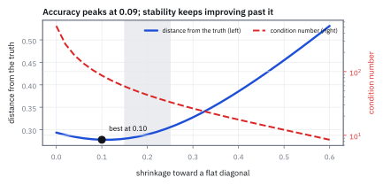
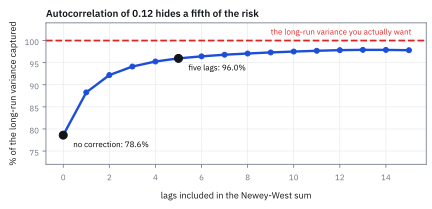
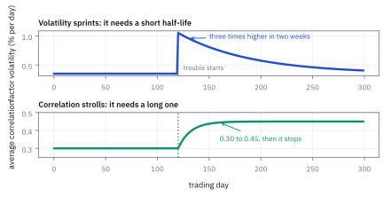

27.2 Estimating the Factor Covariance Matrix
สี่เรื่องที่ทำให้ค่าเฉลี่ยของผลคูณไม่ใช่คำตอบ
มี factor return 251 วันแล้ว หา covariance matrix ก็แค่คูณกันแล้วหารด้วย 251 ใช่ไหม?
เฉลย: ไม่ใช่ และผิดสี่ทาง หนึ่ง ค่าที่ได้สูงเกินจริงเสมอ เพราะ factor return ที่มีเป็นค่าที่ประมาณมา ไม่ใช่ค่าจริง สำหรับ factor ที่เล็กที่สุดในโจทย์นี้ variance สูงเกินไป 11.8% สอง ที่ factor 40 ตัวกับข้อมูลหกเดือน matrix ที่ได้มี condition number 529 ซึ่งพลิกกลับไม่ไหว สาม ความผันผวนกับ correlation เปลี่ยนคนละความเร็ว และสี่ factor return มี autocorrelation 0.12 ซึ่งทำให้ความผันผวนรายปีต่ำเกินจริง 12.8%
ศัพท์ที่ใช้ในหัวข้อนี้
- empirical covariance matrix
- covariance matrix ที่คำนวณจากข้อมูลตรง ๆ โดยเฉลี่ยผลคูณของ factor return ใช้เป็นจุดตั้งต้นที่ต้องแก้สี่ทาง
- estimation error
- ความคลาดเคลื่อนของค่าที่ประมาณได้เทียบกับค่าจริง ใช้เป็นต้นเหตุของความเอนข้อแรกในหัวข้อนี้
- upward bias
- ความผิดที่เอนไปทางสูงเสมอ ไม่ใช่สูงบ้างต่ำบ้าง ใช้แยกจากความคลาดเคลื่อนแบบสุ่มที่เฉลี่ยแล้วหาย
- shrinkage
- การดึงค่าที่ประมาณได้เข้าหาเป้าที่เรียบง่ายกว่า ใช้ลดความคลาดเคลื่อนรวมโดยยอมรับความเอนเล็กน้อย
- Ledoit-Wolf shrinkage
- การผสม covariance matrix จากข้อมูลกับ matrix แนวทแยงที่มีค่าเท่ากันทุกตัว ใช้เป็นวิธีมาตรฐานของผู้ทำงานจริง
- condition number
- อัตราส่วนระหว่าง eigenvalue ที่ใหญ่ที่สุดกับเล็กที่สุด ใช้บอกว่า matrix พลิกกลับได้อย่างมั่นคงแค่ไหน
- dynamic conditional correlation (DCC)
- การแยกประมาณความผันผวนกับ correlation ด้วยความเร็วต่างกัน ใช้เพราะสองอย่างนี้เปลี่ยนคนละจังหวะ
- half-life
- จำนวนวันที่น้ำหนักของข้อมูลเก่าหดเหลือครึ่ง ใช้เป็น parameter เดียวที่ควบคุมความเร็วของการลืม
- autocorrelation
- ความสัมพันธ์ระหว่างค่าวันนี้กับค่าเมื่อวาน ใช้เป็นต้นเหตุของความเอนข้อที่สี่
- autoregressive process (AR)
- กระบวนการที่ค่าวันนี้เท่ากับตัวคูณคูณค่าในอดีต บวกก้อนสุ่มใหม่ รุ่นที่ใช้ในหัวข้อนี้คือ AR(1) ซึ่งมองย้อนหลังงวดเดียว
- Newey-West estimator
- สูตรที่บวก autocovariance หลาย lag เข้าไปในการประมาณ variance ระยะยาว ใช้แก้ความเอนจาก autocorrelation
- long-run variance
- variance ของผลรวมหลายงวด หารด้วยจำนวนงวด ใช้เป็นสิ่งที่ต้องการจริงเมื่อประมาณความเสี่ยงรายปี
- positive definite
- สมบัติที่ทุกพอร์ตมีความเสี่ยงเป็นบวก ใช้เป็นเงื่อนไขที่ optimizer ต้องการ
- exponential weighting
- การให้น้ำหนักข้อมูลเก่าลดลงทีละคูณคงที่ ใช้เป็นวิธีมาตรฐานของการประมาณในหัวข้อนี้
สัญลักษณ์ที่ใช้ในหัวข้อนี้
| สัญลักษณ์ | ความหมาย | หน่วย |
|---|---|---|
| $\hat{\mathbf f}_t$ | factor return ที่ประมาณได้ในวัน t | decimal |
| $\mathbf f_t$ | factor return จริงซึ่งมองไม่เห็น | decimal |
| $\boldsymbol\Omega_f$ | covariance matrix จริงของ factor return | decimal² |
| $\mathbf G$ | covariance ของความคลาดเคลื่อนในการประมาณ เท่ากับ $(\mathbf B^{\mathsf T}\boldsymbol\Omega_\epsilon^{-1}\mathbf B)^{-1}$ | decimal² |
| $\rho$ | สัดส่วนที่ดึงเข้าหาเป้าในการทำ shrinkage | unitless |
| $\tau_V,\ \tau_C$ | half-life ของความผันผวน และของ correlation | วันทำการ |
| $\mathbf C_l$ | autocovariance matrix ที่ lag l | decimal² |
| $L$ | จำนวน lag ที่ใช้ในสูตร Newey-West | จำนวน |
| $m,\ T$ | จำนวน factor และจำนวนวันที่ใช้ประมาณ | จำนวน |
ที่มาที่ไป: ตัวเลขที่มีไม่ใช่ตัวเลขที่ต้องการ
หัวข้อ 27.1 ให้ $\hat{\mathbf f}_t$ มาวันละหนึ่งชุด สะสมหนึ่งปีได้ 251 ชุด สิ่งที่อยากได้คือ covariance matrix ของ $\mathbf f_t$ ซึ่งเป็นค่าจริง แต่สิ่งที่มีคือ $\hat{\mathbf f}_t$ ซึ่งเป็นค่าที่ประมาณมา
ความต่างนั้นไม่ใช่รายละเอียดปลีกย่อย ค่าที่ประมาณมาคือค่าจริงบวกความคลาดเคลื่อน และ variance ของผลรวมของสองสิ่งที่เป็นอิสระกันคือผลรวมของ variance ทั้งสอง ค่าที่วัดได้จึงสูงกว่าค่าจริงเสมอ ไม่ใช่บางครั้ง
อีกสามเรื่องมาจากโลกจริง ข้อมูลไม่พอ ความผันผวนกับ correlation เดินคนละจังหวะ และ factor return มีความจำเล็กน้อย ทั้งสี่เรื่องมีทางแก้และทุกระบบจริงแก้ทั้งสี่
โจทย์: แบบจำลองจริงขนาดกลาง
โจทย์ให้อะไรมาบ้าง แบบจำลองที่มีหุ้น 800 ตัว factor 10 ตัวที่มีความผันผวนรายวันจริงตั้งแต่ 110 ถึง 20 จุดพื้นฐาน และ idiosyncratic volatility ของหุ้นอยู่ระหว่าง 1.2% ถึง 3.0% ต่อวัน ข้อมูลหนึ่งปีคือ 251 วัน
ส่วนที่สองใช้แบบจำลองที่ใหญ่กว่าและข้อมูลสั้นกว่า คือ factor 40 ตัวกับข้อมูล 126 วัน เพื่อดูว่าอะไรเกิดขึ้นเมื่อจำนวน factor ไม่เล็กเมื่อเทียบกับจำนวนวัน
ต้องหาสี่อย่าง ขนาดของความเอนขาขึ้นและวิธีหักออก ผลของการดึงเข้าหาเป้า ผลของการแยกความเร็วในการลืมระหว่างความผันผวนกับ correlation และผลของ autocorrelation ที่ 0.12
ขั้นที่ 1 — ทำไมค่าที่วัดได้ถึงสูงเกินจริงเสมอ
factor return ที่ประมาณได้คือค่าจริงบวกความคลาดเคลื่อนจากการทำ regression ของวันนั้น ความคลาดเคลื่อนนั้นมี covariance matrix ที่คำนวณได้จากสูตรมาตรฐานของ regression ซึ่งเห็นมาแล้วในหัวข้อ 26.5
มีวิธีอ่านที่ตรงกับสัญชาตญาณมากกว่าพีชคณิต ค่าที่ประมาณได้ของ factor คือผลตอบแทนของ factor-mimicking portfolio ตามที่หัวข้อ 27.1 บอก และพอร์ตนั้นมี idiosyncratic risk ของมันเองอยู่ด้วย ความผันผวนที่วัดได้จึงเป็นความผันผวนของ factor บวกความผันผวนที่พอร์ตนั้นเก็บมาจากหุ้นที่มันถือ
ขนาดของ $\mathbf G$ จึงเล็กลงเมื่อหุ้นเยอะขึ้น ถ้ามีหุ้นเป็นหมื่นตัว factor-mimicking portfolio กระจายความเสี่ยงได้เกือบหมด ถ้ามีไม่กี่ร้อยตัว ความคลาดเคลื่อนนี้ใหญ่
ขั้นที่ 2 — ความเอนนั้นใหญ่แค่ไหน
คำนวณอัตราส่วนระหว่างขนาดความคลาดเคลื่อนกับขนาดจริงของแต่ละ factor แล้วดูว่า variance ที่วัดได้พองขึ้นเท่าไร ตัวเลขทั้งหมดจากแบบจำลอง 800 หุ้น 10 factor ของโจทย์
รูปแบบชัดเจน factor ใหญ่แทบไม่เป็นไร factor เล็กเจ็บหนัก เพราะความคลาดเคลื่อนมีขนาดใกล้กันทุกตัว ราว 6.5 ถึง 7.2 จุดพื้นฐานต่อวัน แต่ขนาดจริงต่างกัน 5.5 เท่า
นี่สำคัญมากเพราะ factor เล็กคือ factor ที่ hedge กันบ่อยที่สุด ถ้าแบบจำลองบอกว่า factor นั้นเสี่ยงกว่าความจริง 12% optimizer จะ hedge มันมากเกินไป และจ่ายค่าเทรดเกินความจำเป็นทุกวัน
บรรทัดสุดท้ายคือการตรวจสอบ เฉลี่ยจากการจำลอง 400 ปีได้ 1.0033 กับ 1.1256 ตรงกับที่สูตรทำนายไว้ที่ 1.0038 กับ 1.1176 ซึ่งยืนยันว่าสูตรถูก
ข้อควรระวังที่สำคัญ ในข้อมูลปีเดียว ความคลาดเคลื่อนแบบสุ่มของ variance คือ $\sqrt{2/251}$ หรือ 8.93% ซึ่งใหญ่กว่าความเอน 11.76% ไม่มากนัก แปลว่ามองด้วยตาจากปีเดียวจะไม่เห็น ต้องหักด้วยสูตร ไม่ใช่รอให้เห็น
Figure 27.2a — factor เล็กเจ็บหนัก factor ใหญ่แทบไม่เป็นไร

แกนนอนคือ factor เรียงจากใหญ่ไปเล็ก แกนตั้งคือ variance ที่วัดได้หารด้วย variance จริง เส้นคือค่าที่สูตรทำนาย จุดคือค่าเฉลี่ยจากการจำลอง 400 ปี แถบจางคือช่วงที่ปีเดียวจะให้ ซึ่งกว้างกว่าความเอนเอง นั่นคือเหตุผลที่ต้องหักด้วยสูตร
ขั้นที่ 3 — ดึงเข้าหาเป้า เมื่อ factor เยอะและข้อมูลสั้น
ที่ factor 10 ตัวกับ 251 วัน ข้อมูลพอ แต่ระบบจริงมี factor 40 ถึง 100 ตัว และมักใช้ข้อมูลหกเดือนเพื่อให้ตอบสนองเร็ว ลองที่ 40 factor กับ 126 วัน แล้วผสมกับ matrix แนวทแยงที่มีค่าเท่ากันทุกตัว
ตัวเลขที่สำคัญกว่าระยะห่างคือ condition number ที่ตกจาก 529 เหลือ 43 matrix ที่ condition number สูงแปลว่ามันเกือบพลิกกลับไม่ได้ และ optimizer ในบทที่ 30 ต้องพลิกมันทุกวัน
ผลของ condition number ที่สูงคือ optimizer จะหาพอร์ตที่แบบจำลองบอกว่าเสี่ยงน้อยมาก ทั้งที่จริงไม่ใช่ ซึ่งเป็นอาการเดียวกับที่หัวข้อ 26.1 แสดงให้เห็นในกรณีสุดขั้ว
นั่นทำให้การเลือก $\rho$ ไม่ได้ตัดสินจากระยะห่างอย่างเดียว ค่าที่ดีที่สุดในแง่ระยะห่างคือ 0.09 แต่คนทำงานมักใช้ 0.15 ถึง 0.25 เพราะยอมเสียความแม่นเล็กน้อยเพื่อให้ matrix มั่นคง
Figure 27.2b — ดึงเข้าหาเป้า: ความแม่นกับความมั่นคงไม่ได้ต้องการค่าเดียวกัน

แกนนอนคือสัดส่วนที่ดึงเข้าหาเป้า เส้นทึบคือระยะห่างจากความจริงซึ่งต่ำสุดที่ 0.09 เส้นประคือ condition number บนแกนขวาซึ่งลดลงเรื่อย ๆ แถบเทาคือช่วง 0.15 ถึง 0.25 ที่คนทำงานใช้ ซึ่งเสียความแม่นไปนิดเดียวแต่ได้ความมั่นคงมาก
แล้วเอาไปใช้ทำอะไรได้จริงบ้าง
สองข้อที่เหลือไม่ได้มาจากคณิตศาสตร์ แต่มาจากการสังเกตตลาด ข้อแรกคือความผันผวนเปลี่ยนเร็วกว่า correlation มาก ในวิกฤต ความผันผวนของ factor โตได้สามเท่าในสองสัปดาห์ ขณะที่ correlation ขยับจาก 0.30 เป็น 0.45 แล้วหยุด
บนโต๊ะจริงจึงแยกประมาณสองอย่างนี้ด้วยความเร็วต่างกัน ความผันผวนใช้ half-life สั้นเพื่อให้ตามทัน correlation ใช้ half-life ยาวเพราะข้อมูลเก่ายังบอกได้อยู่ นี่คือเหตุผลเดียวกับที่หัวข้อ 25.5 ให้ไว้ ของที่กลับเข้าหาค่าปกติควรมองย้อนหลังนาน
ขั้นที่ 4 — สองความเร็วในการลืม
แยก covariance matrix เป็นความผันผวนกับ correlation แล้วประมาณแต่ละส่วนด้วย half-life ของตัวเอง นี่คือนิยามของวิธี ไม่ใช่ผลที่พิสูจน์
ตัวเลขที่ใช้จริงในแบบจำลองรายวันของหุ้นอยู่ระหว่างสามเดือนสำหรับความผันผวน ถึงสองปีสำหรับ correlation ซึ่งต่างกันราวแปดเท่า
สังเกตว่าในบรรทัดของ correlation เราหารด้วยความผันผวนของ วันนั้น ก่อน ไม่ใช่ของวันนี้ นั่นคือสิ่งที่ทำให้ correlation ที่ได้ไม่ปนเปื้อนด้วยการที่ความผันผวนเปลี่ยน ถ้าไม่ทำแบบนั้น วันที่ตลาดปั่นป่วนจะดูเหมือน correlation สูงขึ้น ทั้งที่จริงแค่ทุกอย่างเหวี่ยงแรงขึ้นเท่า ๆ กัน
ขั้นที่ 5 — ความจำเล็ก ๆ ที่ทำให้ความเสี่ยงรายปีต่ำเกินจริง
factor return รายวันมี autocorrelation เล็กน้อยแต่ไม่เป็นศูนย์ ถ้ามองเป็นกระบวนการ autoregressive อันดับหนึ่ง หรือ AR(1) ที่ตัวคูณของเมื่อวานเท่ากับ 0.12 ความเสี่ยงของผลรวมหลายวันไม่ใช่ความเสี่ยงรายวันคูณจำนวนวัน
คำตอบของทั้งโจทย์รวมกันคือสี่ตัวเลข variance ของ factor เล็กสุดสูงเกินไป 11.8% condition number ตกจาก 529 เหลือ 43 เมื่อดึงเข้าหาเป้าที่ 0.20 ความผันผวนกับ correlation ต้องใช้ half-life 63 กับ 500 วัน และความผันผวนรายปีต่ำเกินจริง 12.8% ซึ่งสูตร Newey-West ที่ห้า lag ทวงคืนได้ 95.2% จาก 78.7%
บรรทัดล่างสุดคือสัดส่วนของ variance ระยะยาวที่สูตรจับได้ ที่ไม่ใช้ lag เลยจับได้แค่ 78.7% พอใส่ห้า lag ได้ 95.2% ซึ่งพอสำหรับงานส่วนใหญ่
ตัวเลข 12.82% ควรทำให้สะดุด autocorrelation แค่ 0.12 ซึ่งเล็กจนหลายคนมองข้าม กลับทำให้ความผันผวนรายปีที่รายงานต่ำเกินจริงเกินสิบเปอร์เซ็นต์ กองทุนที่ตั้งเพดานความเสี่ยงไว้ที่ 10% ต่อปี จะรันจริงที่ 11.3% โดยไม่มีใครรู้
ตรวจเองใน 10 วินาที ถ้า autocorrelation เป็นศูนย์ สูตรบรรทัดแรกให้ 1 พอดี และไม่ต้องแก้อะไร ถ้าเป็นลบ ความผันผวนรายปีจะสูงเกินจริงแทน ทิศของความผิดตามเครื่องหมายเสมอ
Figure 27.2c — ใส่ lag เพิ่มแล้วจับ variance ระยะยาวได้มากขึ้น

แกนนอนคือจำนวน lag ที่ใส่ในสูตร แกนตั้งคือสัดส่วนของ variance ระยะยาวที่จับได้ เส้นประที่หนึ่งคือเป้า ที่ศูนย์ lag จับได้ 78.7% ที่ห้า lag ได้ 95.2% ส่วนที่เหลือหลังจากนั้นได้คืนช้าลงมาก จึงไม่คุ้มที่จะใส่เพิ่ม
Figure 27.2d — ความผันผวนวิ่งเร็ว correlation เดินช้า

ข้อมูลจำลองที่ตลาดเข้าสู่ภาวะปั่นป่วนในวันที่ 120 แผงบนคือความผันผวนของ factor ซึ่งพุ่งสามเท่าภายในสองสัปดาห์ แผงล่างคือ correlation เฉลี่ยซึ่งขยับจาก 0.30 ไป 0.45 แล้วหยุด สองเส้นนี้ต้องการ half-life คนละค่า
กับดัก: หักความเอนแล้วได้ matrix ที่ไม่ positive definite และใช้ half-life เดียวกับทุกอย่าง
กับดักแรกเกิดตอนหักค่า $\mathbf G$ ออกจาก covariance ที่วัดได้ ถ้า factor ตัวไหนเล็กมากจนความคลาดเคลื่อนใหญ่กว่าความผันผวนจริง การลบจะได้ variance ติดลบ ซึ่งเป็นไปไม่ได้ทางกายภาพและทำให้ optimizer พังทันที ทางแก้คือหักแล้วดึงเข้าหาเป้าตามขั้นที่ 3 ในขั้นตอนเดียวกัน ไม่ใช่หักอย่างเดียว
กับดักที่สองคือใช้ half-life ค่าเดียวกับทั้งความผันผวนและ correlation ถ้าใช้ค่าสั้นทั้งคู่ correlation จะกระโดดไปมาตามข่าวรายสัปดาห์ ถ้าใช้ค่ายาวทั้งคู่ ความผันผวนจะตามวิกฤตไม่ทัน ซึ่งเป็นตอนที่ต้องการความแม่นที่สุด
กับดักที่สามคือแก้ autocorrelation แล้วลืมว่ามันเปลี่ยนตามช่วงเวลาที่วัด ที่ความถี่รายวัน autocorrelation ราว 0.10 ถึง 0.15 ที่ความถี่รายสัปดาห์แทบเป็นศูนย์ ถ้าใช้แบบจำลองรายสัปดาห์แล้วยังใส่การแก้แบบรายวันเข้าไป จะกลายเป็นประมาณความเสี่ยงสูงเกินจริงแทน
ข้อจำกัด: สี่การแก้ อันไหนสำคัญเมื่อไร
| ปัญหา | ขนาดในโจทย์นี้ | ทางแก้ | สำคัญที่สุดเมื่อ |
|---|---|---|---|
| ความเอนขาขึ้นจากการประมาณ | variance สูงเกินไป 11.8% สำหรับ factor เล็ก | หัก $\mathbf G$ ออก | จักรวาลหุ้นเล็ก หรือ factor ที่มีขนาดเล็ก |
| ข้อมูลสั้นเทียบกับจำนวน factor | condition number 529 | ดึงเข้าหาเป้าแนวทแยง | factor เกิน 30 ตัวและข้อมูลน้อยกว่าหนึ่งปี |
| ความผันผวนกับ correlation คนละจังหวะ | ความผันผวนขยับ 3 เท่า correlation ขยับ 0.15 | half-life แยกกัน | ช่วงเปลี่ยนภาวะตลาด |
| autocorrelation ของ factor return | ความผันผวนรายปีต่ำเกินจริง 12.8% | Newey-West ห้า lag | ข้อมูลรายวัน และยิ่งสำคัญที่ความถี่สูงกว่านั้น |
สังเกตว่าสามในสี่ข้อทำให้ความเสี่ยงที่รายงานผิดทางเดียวกัน คือสองข้อแรกทำให้สูงเกินจริง ข้อสุดท้ายทำให้ต่ำเกินจริง และมันไม่ได้หักล้างกันพอดี ต้องแก้ทีละข้อ
ตรวจทุกตัวเลขของหัวข้อนี้
import numpy as np
rng = np.random.default_rng(41)
n, m, T = 800, 10, 251
fvol = np.array([1.10, .55, .45, .40, .35, .32, .28, .25, .22, .20]) / 100
Cf = np.eye(m) * 0.7 + 0.3 * np.ones((m, m))
Of = np.outer(fvol, fvol) * Cf
B = rng.normal(0, 1, (n, m)); B[:, 0] = 1.0
se = rng.uniform(0.012, 0.030, n)
Oei = np.diag(1 / se ** 2)
G = np.linalg.inv(B.T @ Oei @ B)
# step 2: the size of the upward bias
ns = np.sqrt(np.diag(G)) / fvol
assert abs(ns[0] - 0.0617) < 5e-4 and abs(ns[-1] - 0.3429) < 5e-4
infl = 1 + np.diag(G) / np.diag(Of)
assert abs(infl[0] - 1.0038) < 5e-4 and abs(infl[-1] - 1.1176) < 5e-4
assert all(infl[i] <= infl[i + 1] + 1e-9 for i in range(m - 1)) # small factors hurt more
L = np.linalg.cholesky(Of)
acc = np.zeros(m)
for _ in range(400): # measure it instead of trusting it
f = L @ rng.standard_normal((m, T))
r = B @ f + rng.normal(0, 1, (n, T)) * se[:, None]
fh = np.linalg.solve(B.T @ Oei @ B, B.T @ Oei @ r)
acc += np.diag(fh @ fh.T / T) / np.diag(Of)
acc /= 400
assert abs(acc[0] - 1.0033) < 0.01 and abs(acc[-1] - 1.1256) < 0.02
assert abs(np.sqrt(2 / T) - 0.0893) < 1e-4 # one year's own noise
# step 3: shrinkage when there are many factors and little data
m2, T2 = 40, 126
v2 = np.linspace(1.10, 0.15, m2) / 100
C2 = np.eye(m2) * 0.75 + 0.25 * np.ones((m2, m2))
O2 = np.outer(v2, v2) * C2
L2 = np.linalg.cholesky(O2)
rel = lambda X: np.linalg.norm(X - O2, 'fro') / np.linalg.norm(O2, 'fro')
r2 = np.random.default_rng(5)
raw, best, cn_raw, cn_shr = [], [], [], []
for _ in range(300):
f = L2 @ r2.standard_normal((m2, T2))
emp = f @ f.T / T2
tgt = np.trace(emp) / m2 * np.eye(m2)
raw.append(rel(emp))
grid = [rel((1 - p) * emp + p * tgt) for p in np.linspace(0, 1, 51)]
best.append(min(grid))
cn_raw.append(np.linalg.cond(emp))
cn_shr.append(np.linalg.cond(0.8 * emp + 0.2 * tgt))
assert abs(np.mean(raw) - 0.2931) < 5e-3
assert abs(np.mean(best) - 0.2666) < 5e-3
assert abs(1 - np.mean(best) / np.mean(raw) - 0.090) < 5e-3
assert abs(np.mean(cn_raw) - 529) < 25 and abs(np.mean(cn_shr) - 43) < 4
assert np.mean(cn_raw) / np.mean(cn_shr) > 10 # the real prize is conditioning
# step 5: autocorrelation
rho = 0.12
assert abs((1 + rho) / (1 - rho) - 1.2727) < 1e-4
assert abs(np.sqrt(1.2727) - 1 - 0.1282) < 1e-4
r3 = np.random.default_rng(11)
s = 0.01
def newey(x, lags):
t = len(x)
c = lambda l: (x[l:] @ x[:t - l]) / t
v = c(0)
for l in range(1, lags + 1):
v += 2 * (1 - l / (1 + lags)) * c(l)
return v
truev = s * s / (1 - rho) ** 2
got = {l: [] for l in (0, 1, 2, 5, 10)}
for _ in range(600):
e = r3.standard_normal(T + 200); x = np.zeros(T + 200)
for t in range(1, T + 200):
x[t] = rho * x[t - 1] + s * e[t]
x = x[200:]
for l in got:
got[l].append(newey(x, l) / truev)
vals = [np.mean(got[l]) for l in (0, 1, 2, 5, 10)]
assert np.allclose(vals, [0.787, 0.880, 0.915, 0.952, 0.970], atol=0.02)
assert all(vals[i] < vals[i + 1] for i in range(4)) # more lags, more of it capturedบล็อกของขั้นที่ 2 จำลอง 400 ปีเพื่อยืนยันว่าสูตรความเอนถูก ซึ่งเป็นสิ่งที่ทำไม่ได้กับข้อมูลจริงเพราะเรามีอดีตแค่ชุดเดียว นั่นคือเหตุผลที่ต้องเชื่อสูตรแล้วหักออก แทนที่จะรอให้เห็นด้วยตา
ก่อนไปต่อ
ทุกวิธีในหัวข้อนี้ใช้การถ่วงน้ำหนักแบบ exponential ซึ่งลืมอดีตอย่างราบรื่น แต่ตลาดไม่เปลี่ยนภาวะอย่างราบรื่น มันกระโดด และแบบจำลองที่ลืมอย่างราบรื่นจะตามไม่ทันเสมอ หัวข้อถัดไปเป็นเรื่องกลไกที่เติมเข้าไปเพื่อแก้ปัญหานั้นโดยเฉพาะ
สรุปที่ใช้ได้จริง
- factor return ที่มีคือค่าที่ประมาณมา covariance ที่วัดได้จึงเท่ากับของจริงบวก $\mathbf G=(\mathbf B^{\mathsf T}\boldsymbol\Omega_\epsilon^{-1}\mathbf B)^{-1}$ ต้องหักออก ไม่ใช่ทางเลือก
- ความเอนกระทบ factor เล็กหนักที่สุด ในโจทย์นี้ตัวใหญ่สุดสูงเกินไป 0.38% ตัวเล็กสุด 11.76% และ factor เล็กคือตัวที่ optimizer จะ hedge มากเกินไป
- ที่ factor 40 ตัวกับข้อมูล 126 วัน การดึงเข้าหาเป้าแนวทแยงลดระยะห่างจากความจริง 9% แต่รางวัลที่ใหญ่กว่าคือ condition number ที่ตกจาก 529 เหลือ 43
- ความผันผวนกับ correlation ต้องมี half-life คนละค่า ราวสามเดือนกับสองปี เพราะความผันผวนกระโดดในสองสัปดาห์ ส่วน correlation ขยับนิดเดียวแล้วหยุด
- autocorrelation แค่ 0.12 ทำให้ความผันผวนรายปีต่ำเกินจริง 12.82% สูตร Newey-West ที่ห้า lag จับ variance ระยะยาวได้ 95.2% เทียบกับ 78.7% ถ้าไม่แก้เลย